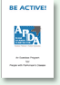

The Science and Practice of LSVT BIG
The Science and Practice of LSVT BIG
Chairman Mohabbat Ali Sr. Physiotherapist & coordinator SRC
Explain advances in neuroscience and impact on the field of rehabilitation. Briefly discuss development and data on an efficacious speech treatment LSVT LOUD. Describe development and key aspects of limb motor treatment LSVT BIG
 PARKINSONS UPDATES - Newsletter Issue Dec 2011
PARKINSONS UPDATES - Newsletter Issue Dec 2011
Message from the Chairman
The last quarter of 2011 is turning out to be a busy period with a lot of patient centric activites. An open house was held at Dow Institute of Physical Sciences which was well attended and showcased the excellent facilities avaiable at the institute.
CULTIVATING HOPE
The Pakistan Parkinson's Society (PPS) which is registered under the Societies Act of 1860 is not for profit and established with the primary objective of being the voice of patients suffering from Parkinson's Disease (PD). The Society aims to achieve public awareness of the Disease with the objective of helping patients, their care givers and medical support staff the ability to make informed disease management choices in order to improve their quality of life.
 Good Nutrition in PARKINSON’S DISEASE
Good Nutrition in PARKINSON’S DISEASE
This booklet was originally written under a grant agreement for the American Parkinson Disease Association, Inc, by Julie H. Carter, RN, MN, Adult Nurse Practitioner, Department of Neurology, Oregon Health Sciences University, Portland, Oregon, ©1992. It was redesigned and reprinted in 1999 through an unrestricted educational grant from Pharmacia & Upjohn Company and Boehringer Ingelheim Pharmaceuticals, Inc
Young Parkinson’s Handbook
by: The Richard E. Heikkila
APDA Advanced Center for Parkinson’s Disease Research and Department of Neurology, Division of Movement Disorders, University of Medicine and Dentistry of New Jersey and Robert Wood Johnson Medical School, New Brunswick, New Jersey
Edited by: Margery H. Mark, MD and Jacob I. Sage, MD;
This handbook is a guide for Parkinson’s disease patients and their families and is not intended as a substitute for medical diagnosis and treatment.
 The Fine Art of “Recreation & Socialization” With Parkinson’s Disease
The Fine Art of “Recreation & Socialization” With Parkinson’s Disease
By Donna Diaz, RN, MS
Coordinator,
APDA Information and Referral Center
New Heaven, CT
Aquatic Exercises for PARKINSON’S DISEASE
By:
Ann Elizabeth Peters O’Nihill, B.S.
Aquatic Specialist, ATRI
Lakeshore Foundation
Birmingham,Alabama
Carla Cothran B.S.,MSN, MAEd
Nurse Coordinator
APDA Parkinson Disease Center
Birmingham,Alabama
Barbara Habermann, PhD,RN
Assistant Professor
UAB Graduate Nursing
Birmingham,Alabama
 BE INDEPENDENT !
BE INDEPENDENT !
By: Josephine Clapcich, OTR/L; Nora Goldberg, M.A., OTR/L; Eileen Walsh, M.S., PT;
A SELF HELP GUIDE FOR PEOPLE WITH PARKINSON’S DISEASE. This booklet was written for the American Parkinson Disease Association, Inc. under a grant agreement with the Staten Island University
Hospital Rehabilitation Medicine Department, Staten Island, New York, 1993 ©
Revised and Reprinted 1999.

BE ACTIVE!
by: Terry Ellis, PT, PhD, NCS; Tami Rork, PT, MSPT; Diane Dalton, PT, DPT, OCS; The Center for Neurorehabilitation; Sargent College; Boston University, Boston MA.
An Exercise Program for People with Parkinson’s Disease. This booklet was written for the American Parkinson Disease Association, Inc.
 Speaking Effectively, A Strategic Guide For Speaking and Swallowing
Speaking Effectively, A Strategic Guide For Speaking and Swallowing
by: Bari Hoffman Ruddy, PhD, CCC-SLP
Assistant Professor, Department of Communicative Disorders, University of Central Florida, Orlando, FL.
Associate Director, The Ear Nose Throat and Plastic Surgery Associates Voice Care Center, Orlando, Florida.
Christine Sapienza, PhD, CCC-SLP
Associate Professor, Department of Communication Sciences and Disorders, University of Florida, Gainesville, FL.
Faculty Member, Movement Disorders Clinic, University of Florida. Gainesville, FL.
 Helping your partner what not to do!
Helping your partner what not to do!
By Kathryn A. Cullen BSN, MS.
Former coordinator-APDA Information and Referral Center
Memorial Hospital of Rhode Island
Pawtucket, Rhode Island
 Hospitalization of A Parkinson Patient
Hospitalization of A Parkinson Patient
by: Joseph H. Friedman, MD
Clinical Professor Dept. Clinical Neuroscience, Brown University Medical School, Providence, R.I
Director, APDA Information and Referral Center, Kent Hospital, Warwick, R.I.
Director, Neurohealth PD & Movement Disorder Center, Warwick, R.I
 The Challenges of Parkinson’s Disease: Adapting to a Nursing Home
The Challenges of Parkinson’s Disease: Adapting to a Nursing Home
by: Karla Tolson, R.N., B.S.N.
Former Coordinator, APDA Information and Referral Center, Tulsa, Oklahoma.
This material is intended to provide the reader with information. It should not be used for treatment purposes, but rather as a source for discussion with the patient's own physician.
 Medical Management of Parkinson’s Disease
Medical Management of Parkinson’s Disease
By: Marilyn R. Semenchuk, Pharm.D., BCPP
Senior Neurology Regional Medical Scientist, GlaxoSmithKline, Phoenix, AZ
This material is intended to provide the reader with information. It should not be used for treatment purposes, but rather as a source for discussion with the patient's own physician.
When Should Parkinson’s Disease Patients Go To The Emergency Room?
by: Joseph H. Friedman, MD
Clinical Professor Dept. Clinical Neuroscience, Brown University Medical School, Providence, R.I.
Director, APDA Information and Referral Center, Kent Hospital, Warwick, R.I.
Director, Neurohealth PD & Movement Disorder Center, Warwick, R.I
 Neuro-opthalmology And Parkinson’s Disease
Neuro-opthalmology And Parkinson’s Disease
by: Andrew A. Berman, MD
Eye Care Ltd., Highland Park, Skokie, IL
This material is intended to provide the reader with information. It should not be used for treatment purposes, but rather as a source for discussion with the patient's own physician.
 Fatigue in Parkinson’s Disease
Fatigue in Parkinson’s Disease
by: Joseph H. Friedman, MD
Director of APDA I&R Center, Warwick, RI
This material is intended to provide the reader with information. It should not be used for treatment purposes, but rather as a source for discussion with the patient's own physician.
 Impact of Parkinson’s Disease on Patient Participation in Daily Life: Results of an International Survey
Impact of Parkinson’s Disease on Patient Participation in Daily Life: Results of an International Survey
by: Professor Leslie Findley, Consultant Neurologist and Chairman, Essex, Neurosciences Unit, UK; Mary G Baker MBE, President of the European Parkinson’s Disease Association, UK.
The survey results were presented at the ‘Participation in Life Conference’, 2-4 July 1999, Krakow, Poland.
This paper was supported by an educational grant from Pharmacia, Peapack, NJ, US
 Parkinson’s Disease Handbook
Parkinson’s Disease Handbook
by: Lawrence I. Golbe, MD, Professor; Margery H. Mark, MD, Associate Professor; Jacob I. Sage, MD, Professor and Director, Division of Movement Disorders and The Richard E. Heikkila APDA Advanced Center for Parkinson’s Disease Research; edited by Margery H. Mark, MD
This handbook is a guide for Parkinson’s disease patients and their families and is not intended as a substitute for medical diagnosis and treatment.
Parkinson’s Disease Patient Checklist
Patients can be overwhelmed by the amount of information they may receive at a consultation with a healthcare professional (HCP). This checklist has been developed to help you, the patient prepare as best as possible for these consultations.
We advise you to read the checklist carefully prior to the consultation with your doctor and mark the items of importance to you.
 Recovery from Parkinson’s Disease
Recovery from Parkinson’s Disease
by: Janice Walton-Hadlock
The cause and the effective treatment of Parkinson’s disease according to principles of traditional Asian medicine.
published by: The Parkinson’s Recovery Project, 343 Soquel Ave. #413, Santa Cruz, CA 95062, www.pdrecovery.org
Medications Approved for the Treatment of Parkinson’s Disease in the USA
This material is intended to provide the reader with information. It should not be used for treatment purposes, but rather as a source for discussion with the patient's own physician.
The most common side effects are listed. Additional side effects, if any, should be discussed with your health care provider.
 Parkinson’s Disease and Oral Health
Parkinson’s Disease and Oral Health
by: Michaell A. Huber, DDS
Associate Professor and Head, Division of Oral Medicine, Department of Dental Science, University of Texas Health Science Center, Dental School, San Antonio, Texas
This material is intended to provide the reader with information. It should not be used for treatment purposes, but rather as a source for discussion with the patient's own physician.
 Keys to Caregiving
Keys to Caregiving
by: Caryn Crenshaw, RN, Coordinator
APDA Information & Referral Center, Centennial Medical Center, Nashville, TN
This material is intended to provide the reader with information. It should not be used for treatment purposes, but rather as a source for discussion with the patient's own physician.
 Exercises For The Parkinson Patient.
Exercises For The Parkinson Patient.
Just as running water does not freeze, so moving muscles do not freeze.
Ten basic exercises and suggestions designed to help Parkinson Patient. They are ancillary to medical treatment which should be carried out in consultation with your physician. In special instances where other diseases are associated with parkinsonism, your physician may wish to limit the intensity of your physical activity.
 Nonpharmacologic Treatments
Nonpharmacologic Treatments
A wide variety of problems in PD may respond to nonpharmacological treatments. In all cases, an individualized approach is needed to identify the problems and determine a treatment plan. Effective treatment may reduce the need for medications and improve quality of life.